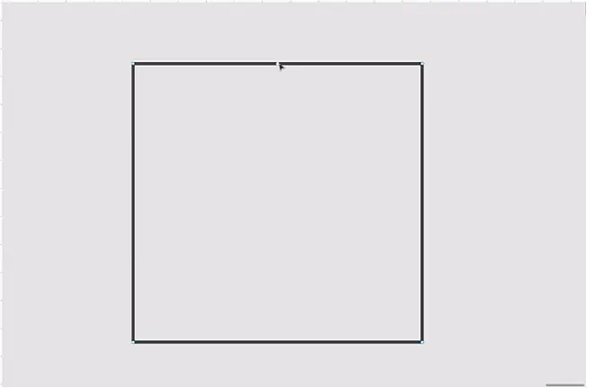

Добавьте на квадрат дополнительные точки, чтобы получился многоугольник:
- На панели инструментов нажмите на иконку , наведите курсор на одну из линий — посередине вы увидите
точку.
- Зажмите эту точку правой кнопкой мыши и тяните её от центра фигуры.
- Повторите то же самое с остальными сторонами фигуры.
